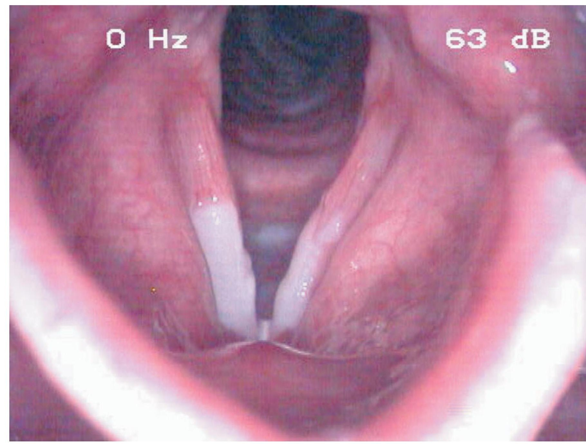
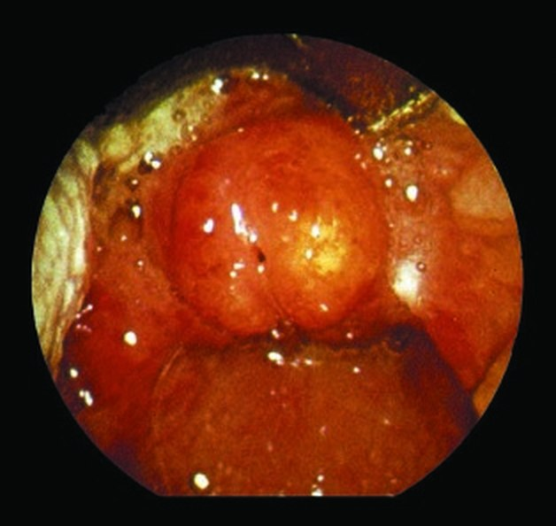
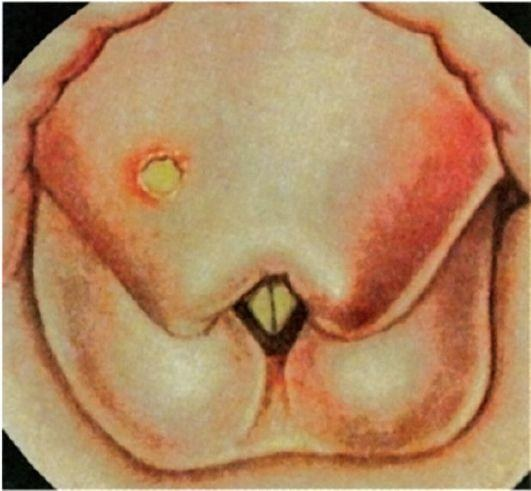

Острые ларингиты и трахеит
Ларингиты в национальном руководстве
Национальное руководство описывает острый и хронический ларингиты в одном разделе. Ниже приведено то, что относится к ларингитам в целом и к острым формам; особенности хронического ларингита — в главе «Хронические ларингиты и предраковые заболевания гортани».
Определения
Ларингит — воспаление гортани любой этиологии.
Абсцедирующий, или флегмонозный, ларингит — острый ларингит с образованием абсцесса, чаще на язычной поверхности надгортанника или на черпалонадгортанных складках; проявляется резкими болями при глотании и фонации, иррадиирующими в ухо, повышением температуры тела, наличием плотного инфильтрата в тканях гортани.
Хондроперихондрит гортани — острое или хроническое воспаление хрящей гортани, т.е. хондрит, при котором воспалительный процесс захватывает надхрящницу и окружающие ткани. по: Нац. руководство, 2016, с. 856
Коды по МКБ-10
Острый ларингит и его формы кодируются так:
- J04 Острый ларингит и трахеит.
- J04.0 Острый ларингит.
- J04.2 Острый ларинготрахеит.
- J05 Острый обструктивный ларингит (круп) и эпиглоттит.
- J05.0 Острый обструктивный ларингит (круп).
по: Нац. руководство, 2016, с. 856
Классификация
Ларингиты подразделяют на острые и хронические. Формы острого ларингита:
- катаральный;
- отёчный;
- флегмонозный (инфильтративно-гнойный): инфильтративный и абсцедирующий.
по: Нац. руководство, 2016, с. 857
Формы хронического ларингита:
- катаральный;
- отёчно-полипозный (болезнь Рейнке — Гайека);
- атрофический;
- гиперпластический: ограниченный и диффузный.
по: Нац. руководство, 2016, с. 857
Этиология
Острый ларингит сравнительно редко развивается как самостоятельное заболевание и может быть воспалительной и невоспалительной природы. Обычно острый ларингит составляет симптомокомплекс ОРВИ (гриппа, парагриппа, аденовирусной инфекции), при которой в воспалительный процесс вовлечена также слизистая оболочка носа и глотки, а иногда и нижних дыхательных путей (бронхи, лёгкие). Первое место среди причин развития острого ларингита занимают респираторные вирусы (до 90% случаев), далее следуют бактериальная (стафилококки, стрептококки), хламидийная и грибковая инфекции. Острый эпиглоттит, абсцесс надгортанника чаще вызывает Haemophilus influenzae, Streptococcus pneumoniae, Streptococcus pyogenes.
Причины ларингита — инфекция, наружная и внутренняя травма шеи и гортани, в том числе ингаляционные поражения и попадание инородного тела, аллергия, гастроэзофагеальный рефлюкс. Большое значение имеет голосовая нагрузка, особенно с использованием твёрдой атаки. Возникновению воспалительной патологии гортани способствуют хронические заболевания бронхолёгочной системы, носа и околоносовых пазух, нарушения обмена веществ при сахарном диабете, гипотиреозе или заболеваниях желудочно-кишечного тракта, хроническая почечная недостаточность, патология разделительной функции гортани, злоупотребление спиртными напитками и табаком, перенесённая лучевая терапия. Специфические (вторичные) ларингиты развиваются при туберкулёзе, сифилисе, инфекционных (дифтерии) и системных заболеваниях (гранулематоз Вегенера, ревматоидный артрит, амилоидоз, саркоидоз, полихондрит и др.), а также при заболеваниях крови. Иммунные аспекты хронической воспалительной патологии гортани до конца не изучены. Обнаруживают нарушения иммунной системы.
Патогенез
В патогенезе развития острого отёка гортани и хронического отёчно-полипозного ларингита большую роль играют анатомические особенности пространства Рейнке. Значение имеет нарушение лимфооттока и местного водного обмена. Отёк слизистой оболочки может возникнуть в любом отделе гортани и быстро распространиться на другие, вызывая острый стеноз гортани.
Клиническая картина
Симптомы ларингита — охриплость, кашель и затруднение дыхания. Для острых форм характерно внезапное начало заболевания при общем хорошем состоянии или на фоне небольшого недомогания. Температура тела остаётся нормальной или повышается до субфебрильных цифр при катаральном остром ларингите. Фебрильная температура, как правило, отражает присоединение воспаления нижних дыхательных путей или переход катарального воспаления гортани во флегмонозное. Для инфильтративных и абсцедирующих форм острого ларингита характерны сильные боли в горле, нарушение глотания, в том числе жидкости, выраженная интоксикация, нарастающая симптоматика стеноза гортани. Выраженность клинических проявлений напрямую коррелирует с тяжестью воспалительных изменений. Общее состояние больного становится тяжёлым. Возможно развитие флегмоны шеи и медиастинита, сепсиса, абсцедирующей пневмонии.
Диагностика
При сборе анамнеза обращают внимание на наличие этиопатогенетических факторов развития заболевания, частоту рецидивов.
Лабораторные исследования
Больные с катаральной формой острого или хронического ларингита не нуждаются в специальном обследовании. Больным с острыми абсцедирующими, инфильтративными и хроническими ларингитами проводят комплексное общеклиническое обследование. Кроме того, необходимо микробиологическое, микологическое, гистологическое исследования; в ряде случаев для выявления этиологических факторов заболевания проводят диагностику с применением ПЦР.
Инструментальные исследования
Основной метод диагностики ларингита — ларингоскопия. Для картины острого ларингита характерна гиперемия, отёк слизистой оболочки гортани, усиление сосудистого рисунка. Голосовые складки, как правило, розовые или ярко-красные, утолщены, щель при фонации овальная или линейная, в узелковой зоне скапливается мокрота.
Подскладковый ларингит — валикообразное утолщение слизистой оболочки подголосового отдела гортани. Если он не связан с интубационной травмой, его выявление у взрослых требует дифференциальной диагностики с системными заболеваниями и туберкулёзом. При инфильтративном ларингите определяют значительную инфильтрацию, гиперемию, увеличение в объёме и нарушение подвижности поражённого отдела гортани. Часто видны фибринозные налёты, в месте формирования абсцесса просвечивает гнойное содержимое. При тяжёлой форме ларингита и хондроперихондрите гортани характерны болезненность при пальпации, нарушение подвижности хрящей гортани, возможна инфильтрация и гиперемия кожных покровов в проекции гортани. Абсцесс надгортанника выглядит как шаровидное образование на его язычной поверхности с просвечивающим гнойным содержимым.
Для уточнения тяжести воспалительного процесса и дифференциальной диагностики применяют рентгеновскую или компьютерную томографию гортани и трахеи, эндофиброларинготрахеоскопию, исследование функции внешнего дыхания для оценки степени дыхательной недостаточности при ларингите, сопровождающемся стенозом воздухопроводящих путей. У больных с флегмонозными и абсцедирующими ларингитами проводят рентгенографию лёгких, рентгеновскую томографию средостения. Для исключения патологии пищевода, особенно у больных с гнойными процессами в гортани, показана эзофагоскопия. Применение микроларингоскопии и микроларингостробоскопии позволяет провести дифференциальную диагностику с раком, папилломатозом и туберкулёзом гортани.
Дифференциальная диагностика
Дифференциальную диагностику проводят в первую очередь с раком и туберкулёзом гортани. Во всех случаях подголосового ларингита, артрита перстнечерпаловидного сустава следует исключать системное заболевание. Вовлечение в патологический процесс гортани при гранулематозе Вегенера встречается в 6–25% случаев в виде подскладкового ларингита, сопровождающегося стенозом подголосового отдела. Изолированное поражение гортани при склероме наблюдается в 4,5% случаев, чаще в процесс вовлечены нос, носоглотка и гортань. При этом в подголосовом пространстве формируются бледно-розовые бугристые инфильтраты. Процесс может распространяться в трахею или в краниальном направлении на другие отделы гортани.
Встречается первичный амилоидоз гортани (узловая или диффузно-инфильтративная формы) и вторичный, развивающийся на фоне хронических воспалительных системных заболеваний (болезнь Крона, ревматоидный артрит, туберкулёз и др.). Чаще поражение носит диффузный характер при интактной слизистой оболочке, иногда с распространением на трахеобронхиальное дерево. Отложения амилоида локализуются преимущественно в надголосовом отделе гортани, иногда в виде подскладкового ларингита. Саркоидоз встречается в гортани в 6% случаев в виде эпиглоттита и гранулематоза. Голосовые складки поражаются редко. При ревматоидном артрите патологию гортани диагностируют у 25–30% пациентов. Клинически заболевание проявляется в виде артрита перстнечерпаловидного сустава. Дифференциальный диагноз проводят на основании общеклинических, серологических исследований и биопсии.
Для туберкулёза гортани характерен полиморфизм изменений. Отмечают образование милиарных узелков, инфильтратов, которые подвергаются распаду с образованием грануляций, язв и рубцов. Нередко образуются туберкуломы и хондроперихондриты. Сифилис гортани проявляется в виде эритемы, папул и кондилом. Часто формируются язвы, покрытые серовато-белым налётом.
Дифференциальную диагностику абсцедирующего и флегмонозного ларингита проводят с врождённым поликистозом корня языка, нагноившимся ларингоцеле, раком гортани или входа в пищевод. Абсцесс надгортанника необходимо дифференцировать с эктопированной щитовидной железой.
Показания к консультации других специалистов
Для уточнения этиологии развития воспалительного процесса в гортани показана консультация гастроэнтеролога, пульмонолога, аллерголога, иммунолога, эндокринолога, миколога, терапевта, ревматолога и фтизиатра. Пациентам с тяжёлыми флегмонозными ларингитами при подозрении на развитие флегмоны шеи или медиастинита показана консультация хирурга; больным с хроническим гиперпластическим ларингитом — онколога.
Лечение
Цель лечения — элиминация воспалительного процесса в гортани, восстановление голоса, предотвращение хронизации воспалительного процесса.
Показания к госпитализации
Лечение острого катарального ларингита проводят в амбулаторных условиях. Госпитализации в стационар подлежат все пациенты с отёчными ларингитами, эпиглоттитами и абсцессами надгортанника, осложнёнными формами заболевания (инфильтративной и абсцедирующей) при угрозе развития стеноза гортани и травмах. Госпитализация показана также при необходимости проведения хирургического лечения.
Немедикаментозное лечение
Большое значение имеет ограничение голосовой нагрузки, при этом шёпотная речь запрещена. Высокую клиническую эффективность доказала местная противовоспалительная, особенно ингаляционная терапия. С этой целью применяют антибактериальные, муколитические, гормональные лекарственные средства, растительные препараты с противовоспалительным и антисептическим эффектом, а также минеральную воду. Хороший эффект даёт применение физиотерапевтических методов: электрофореза 1% калия йодида, гиалуронидазы или кальция хлорида на гортань, терапевтического лазера, микроволн, фонофореза, в том числе эндоларингеального и др. При осложнённых абсцедирующих и флегмонозных ларингитах, хондроперихондритах возможно применение гипербарической оксигенации. В стадии реконвалесценции и в тех случаях, когда напряжённая фонация является одним из этиопатогенетических факторов при развитии гипотонусных расстройств голосовой функции в исходе воспаления, показана фонопедия и стимулирующая терапия.
Медикаментозное лечение
Большое значение имеет терапия сопутствующей патологии верхних и нижних дыхательных путей, иммунного статуса, гастроэзофагеального рефлюкса.
Антибактериальную терапию при остром ларингите и обострении хронического при выраженных воспалительных явлениях с присоединением гнойной экссудации назначают эмпирически, с применением препаратов широкого спектра действия (амоксициллин + клавулановая кислота, фторхинолоны). Периоперационную антибиотикотерапию назначают в случае проведения хирургического вмешательства при прямой микроларингоскопии, имплантационных методах коррекции, большом объёме вмешательства. При грибковом ларингите назначают антимикотические препараты. Проводят противоотёчную и десенсибилизирующую терапию, при наличии вязкой мокроты или сухости слизистой оболочки назначают муколитики и секретолитики, ферментные препараты, стимулирующую и рассасывающую терапию, лекарственные средства, улучшающие микроциркуляцию и нервно-мышечную передачу, а также повышающие тонус мышц. Применение специфической терапии при специфических ларингитах не исключает использования местной и общей противовоспалительной терапии. Большое внимание следует уделять лечению больных с инфильтративными и абсцедирующими ларингитами. Им показаны массивная дезинтоксикационная терапия, парентеральное питание, коррекция водно-солевого обмена, внутривенная антибактериальная терапия.
Хирургическое лечение
При абсцедирующем ларингите производят вскрытие абсцессов при непрямой ларингоскопии ножом Тобольта. При осложнениях в виде флегмоны шеи или медиастинита проводят комбинированное хирургическое лечение наружным и эндоларингеальным доступом.
Дальнейшее ведение
Пациентам голосовых профессий после перенесённого острого ларингита показано наблюдение фониатра до полного восстановления голоса.
Сроки нетрудоспособности зависят от профессии пациента: у лиц голосовых профессий они удлиняются до восстановления голосовой функции. Неосложнённый острый ларингит разрешается в течение 7–14 дней; инфильтративные формы — около 14 дней.
При развитии острого ларингита необходимо ограничение голосовой нагрузки. Запрещён приём горячей, холодной и острой пищи, спиртных напитков, курение, паровые ингаляции. Показано постоянное увлажнение воздуха в помещении с помощью специальных увлажнителей. При неосложнённых формах ларингита прогноз благоприятный. по: Нац. руководство, 2016, с. 857–862
Острый катаральный ларингит
Острый катаральный ларингит представляет собой острое воспаление слизистой оболочки гортани, вызванное банальной микробиотой. Чаще всего он развивается как проявление острого респираторного заболевания: начавшись с ринофарингита, воспаление нисходит на гортань и трахею. Предрасполагают холодный сезон, курение, алкоголь, профессиональные вредности, голосовое перенапряжение, хронические заболевания носа и глотки с нарушением носового дыхания. Чаще всего возбудителем служит полимикробная ассоциация, активированная гриппозной инфекцией.
Заболевание начинается с сухости, першения и жжения в гортани, боли при фонации. Затем появляются осиплость или афония, лающий кашель с болезненными рвущими позывами; через один-два дня начинает отделяться мокрота, и боль заметно ослабевает. Общее состояние страдает мало, температура тела на фоне острого респираторного заболевания может повышаться до 38 °С. При ларингоскопии в разгар болезни определяются гиперемия всей слизистой оболочки, особенно выраженная в области голосовых складок и грушевидных синусов, отёк, слизисто-гнойный экссудат и несмыкание голосовых складок. Дисфония уменьшается через 5–6 дней, признаки катарального воспаления исчезают к 12–15-му дню.
Воспаление бывает ограниченным. При поражении только надгортанника (epiglottitis acuta) преобладает боль при глотании, так как при глотании надгортанник опускается и прикрывает вход в гортань. Поражение складок преддверия или голосовых складок проявляется расстройством фонации, гиперемия в области межчерпаловидного пространства (laryngitis acuta posterior) сильным кашлем. При разлитом ларингите отёк наиболее выражен в вестибулярных и черпалонадгортанных складках, свободный край голосовых складок утолщается в виде округлых валиков, при стробоскопии выявляются ограничение подвижности и асинхронность колебаний.


Острый катаральный ларингит в учебнике Пальчуна для колледжей
Острое воспаление слизистой оболочки гортани (laryngitis catarrhalis acuta) нередко наблюдают как самостоятельное заболевание. Часто оно бывает продолжением катарального воспаления слизистой оболочки носа, глотки, в том числе при кори, коклюше, гриппе, тифе, ревматизме и т.д. Как самостоятельное заболевание острый катаральный ларингит возникает в результате активизации флоры, сапрофитирующей в гортани, под влиянием таких факторов, как переохлаждение, раздражение никотином при неумеренном курении, злоупотреблении алкоголем, перенапряжении голосовых складок в момент крика, воздействии некоторых профессиональных вредностей (пыли, паров, газов и др.).
Заболевание характеризуется появлением охриплости, першения, саднения и сухости в горле. Температура чаще нормальная, реже повышается до субфебрильной. Одновременно с этими субъективными ощущениями в начале болезни возникает сухой кашель, а затем с мокротой.
При ларингоскопии определяют гиперемию слизистой оболочки гортани. В большинстве случаев гиперемия носит разлитой характер, но более выражена в области голосовых складок. Здесь же иногда бывают точечные кровоизлияния в толщу слизистой оболочки. По мере разв ития воспалительного процесса в гортани появляется слизь, которая высыхает, быстро становится вязкой, а затем превращается в корки. При отрыве такой корки от слизистой оболочки в момент кашлевого толчка возникает быстропреходящее кровохарканье. В ряде случаев воспаление в гортани может перейти в отечно-инфильтративную форму. У детей ларингит необходимо дифференцировать от распространенной формы дифтерии. Патологоанатомические изменения в этом случае будут характеризоваться развитием фибринозного воспаления с образованием грязно-серых пленок, интимно связанных с подлежащими тканями.
Лечение
Лечение в первую очередь должно предусматривать щажение органа. Больному необходимо соблюдать голосовой режим (режим молчания) до стихания острых воспалительных явлений; необходимо прекратить прием острой, холодной пищи, спиртных напитков и курение. Применяют согревающий компресс на шею. Лекарственная терапия направлена на ликвидацию воспалительного процесса в гортани и предупреждение осложнений. В связи с этим следует назначить аэрозоль фузафунгина или ингаляции растворами антибиотиков: 200 000 ЕД бензилпенициллина + 250 000 ЕД стрептомицина + 5,0 мл изотонического раствора хлорида натрия.
Детям во время приступа удушья рекомендуют отвлекающие трехминутные с повторением через 10–15 мин горячие ножные ванны, горчичники на икры, вдыхание увлажненного кислорода. В комнате, где находится больной ребенок, необходимо поддерживать высокую влажность воздуха. Если явления удушья принимают угрожающий характер, необходимо прибегнуть к трахеостомии или интубации. по: Пальчун, учебник для колледжей, с. 173–174
Острый катаральный ларингит в учебнике Пальчуна, Магомедова и Лучихина
Острые воспалительные заболевания гортани и трахеи часто встречаются как проявление острых воспалительных заболеваний верхних дыхательных путей. Причиной может быть самая разнообразная флора: бактериальная, грибковая, вирусная, смешанная. 4.4.1. Острый катаральный ларингит Острый катаральный ларингит (laryngitis) — острое катаральное воспаление слизистой оболочки гортани. Как самостоятельное заболевание возникает в результате активизации флоры, сапрофитирующей в гортани под влиянием экзогенных и эндогенных факторов. Среди экзогенных играют роль такие факторы, как переохлаждение, раздражение слизистой оболочки, воздействие профессиональных вредностей (пыль, газы и др.), длительный громкий разговор на холоде, употребление очень холодной или очень горячей пищи. Эндогенные факторы: пониженная иммунная реактивность, болезни желудочно-кишечного тракта, аллергические реакции, возрастная атрофия слизистой. Острый катаральный ларингит часто возникает в период полового созревания, когда происходит мутация голоса. Среди разнообразных этиологических факторов в возникновении данного заболевания играет роль бактериальная флора — В-гемолитический стрептококк, streptococcus pneumoniae, вирусные инфекции; вирусы гриппа (А и В), парагриппа, коронавирус, риновирус, грибковая флора. Часто встречается смешанная флора. Клиническая картина характеризуется появлением охриплости, першения, чувства дискомфорта и инородного тела в горле. Температура чаще нормальная, реже повышается до субфебрильной. Нарушения голосообразовательной функции выражаются в виде различной степени дисфонии. Иногда больного беспокоит сухой кашель, который в дальнейшем сопровождается отхаркиванием мокроты. Патоморфологические изменения сводятся к нарушению кровообращения, гиперемии, мелкоклеточной инфильтрации и серозному пропитыванию слизистой оболочки гортани. При распространении воспаления на вестибулярный отдел гортани голосовые складки могут быть прикрыты отечными, инфильтрированными вестибулярными складками. При вовлечении в процесс подскладочной области возникает клиническая картина ложного крупа (подскладочный ларингит). Диагностика не представляет особых трудностей, поскольку основывается на патогномоничных признаках: острое появление охриплости, часто связанное с определенной причиной (холодная пища, ОРВИ, простуда, речевая нагрузка и др.); характерная ларингоскопическая картина — выраженная гиперемия слизистой всей гортани или только голосовых складок, утолщение, отечность и неполное смыкание голосовых складок; отсутствие температурной реакции, если нет респираторной инфекции. К острому ларингиту стоит относить и те случаи, когда имеется только краевая гиперемия голосовых складок, поскольку этот ограниченный процесс, как и разлитой, склонен переходить в хроническую форму. У детей ларингит необходимо дифференцировать с распространенной формой дифтерии. Патологоанатомические изменения в этом случае будут характеризоваться развитием под голосовыми складками фибринозного воспаления с образованием грязно-серых пленок, интимно связанных с подлежащими тканями (истинный круп). Рожистое поражение слизистой гортани отличается от катарального процесса четкой очерченностью границ и одновременным заболеванием кожных покровов лица.
Лечение
При своевременном и адекватном лечении заболевание заканчивается в течение 10–14 дней; длительность более 3 нед чаще всего свидетельствует о переходе в хроническую форму. Важнейшей и необходимой лечебной мерой является соблюдение голосового режима (режима молчания) до стихания острых воспалительных явлений. Несоблюдение щадящего голосового режима не только задержит выздоровление, но и будет способствовать переходу процесса в хроническую форму. Не рекомендуется прием острой, соленой пищи, спиртных напитков, курение. Лекарственная терапия в основном носит местный характер. Эффективны ингаляции и орошение слизистой гортани комбинированными препаратами, содержащими противовоспалительные компоненты (фузафунгин, лизаты бактерий и др.), вливание в гортань лекарственных смесей из кортикостероидных, антигистаминных препаратов и антибиотиков в течение 7–10 дней. Эффективны смеси для вливания в гортань, состоящие из 1% масляного раствора ментола, эмульсии гидрокортизона с добавлением нескольких капель 0,1% раствора эпинефрина гидрохлорида. В комнате, где находится больной, желательно поддерживать повышенную влажность воздуха. При стрептококковых и пневмококковых инфекциях, сопровождающихся повышением температуры тела, интоксикацией организма, назначают общую антибиотикотерапию: препараты пенициллинового ряда (феноксиметилпенициллин по 1 млн 4–6 раз в сут, амоксициллин 500 мг 2 раза в сут) или макролиды (например, азитромицин по 500 мг 1 раз в сут). Прогноз благоприятный при соответствующем лечении и соблюдении голосового режима. по: Пальчун, Магомедов, Лучихин, учебник, с. 355–358
Острый ларингит у детей в руководстве Богомильского и Чистяковой
Острый ларингит — острое воспаление гортани обычно вторичного происхождения и сочетается с заболеваниями носоглотки или нижних дыхательных путей (восходящее и нисходящее инфицирование).
Распространенность
Острый ларингит чаще наблюдается у детей старшего возраста.
Этиология
Развитию заболевания способствуют вдыхание холодного воздуха через рот, питье холодной воды при перегревании тела, перенапряжение голосового аппарата, вирусная или бактериальная инфекция, Возможно, имеют значение механические, термические, химические раздражители. Острый ларингит может быть проявлением острых инфекционных заболеваний (грипп, корь, скарлатина и пр.). Предрасполагают к острому ларингиту хронический ринофарингит, гнойный синусит, ротовое дыхание. К эндогенным факторам относятся нарушения обмена веществ с повышенной чувствительностью слизистой оболочки гортани даже к слабым раздражителям, повышенное потоотделение при вегетоневрозах.
Классификация
Различают разлитой (диффузный) и ограниченный острый ларингит.
Клиническая характеристика
Заболевание обычно начинается постепенно, без повышения температуры тела или с субфебрильной температурой и при общем удовлетворительном состоянии, но может начинаться и внезапно. Острый ларингит сопровождается резко выраженной гиперестезией гортани. Больные жалуются на ощущение сухости, жжения, першения, саднения в горле, сухой мучительный судорожный кашель. Иногда появляется болезненность при глотании. Голос становится грубым, наблюдается охриплость или афония, утомляемость голоса. Сухой кашель сменяется влажным, со значительным отделением сначала слизистой, а затем слизисто-гнойной мокроты. Патогистологически выявляются гиперемия, мелкоточечная инфильтрация, серозное пропитывание слизистой оболочки, подслизистой ткани и мышц гортани. Увеличенное проникновение лейкоцитов через межэпителиальные щели и исчезновение membrana limitans наряду с усиленным функционированием слизистых желез сопровождаются разрывами, десквамацией и частичным отторжением цилиндрического эпителия.
Диагностика и дифференциальная диагностика
При диффузной форме заболевания при ларингоскопии определяют рассеянную гиперемию и набухлость слизистой оболочки гортани. При ограниченной форме эти изменения наблюдаются на голосовых складках, в межчерпаловидном или подголосовом пространстве. На фоне гиперемированной слизистой оболочки видны расширенные поверхностные кровеносные сосуды. Голосовые складки розовые, отечные, в просвете гортани вязкий секрет в виде слизисто-гнойных тяжей (рис. 5.10, см. цветную вклейку). При фонации смыкание голосовых складок неполное из-за миозита голосовых мышц. Голосовая щель имеет форму овала. При геморрагической форме ларингита в слизистой оболочке выявляются кровоизлияния, при фибринозной — налеты фибрина. При отторжении эпителия образуются эрозии. Отек выражен незначительно и затрудненного дыхания, как правило, не наблюдается.
Лечение
Постельный режим, максимальный голосовой покой, нераздражающая пища (ограничение острых и горячих блюд), щелочные минеральные воды (боржом, ессентуки №4), обильное теплое питье (молоко пополам с боржомом или со сливочным маслом). Отвлекающая терапия (горчичники на шею. грудную клетку, к икроножным мышцам, сухая горчица в носки у детей младшего возраста, согревающий компресс на шею), Физиотерапия: УВЧ-терапия, паровые или аэрозольные ингаляции 2–3% раствора соды, хлорэтона, сосудосуживающих средств, у детей старше 5 лет — 0,5% раствора ментола, ингаляции фитонцидов (лук, чеснок, хвоя), готовые формы аэрозолей. Препараты, успокаивающие кашель, и отхаркивающие средства. У детей старшего возраста делают вливания в гортань (инстилляции) 1–1,5 мл 0,25-0,5% раствора ментола в персиковом или оливковом масле. При ларингитах инфекционного происхождения в лечебный комплекс включают антибиотики и сульфаниламидные препараты. При затяжном течении заболевания назначают малые дозы Йода в виде микстуры или внутримышечно по 0,3-1,0 мл 2–3% раствора йодида натрия 3-4 раза в день либо внутривенно 10% раствор по 5–10 мл на одно вливание. Прогноз благоприятный. Продолжительность острого ларингита обычно колеблется от 5 до 10 дней. Состояние довольно быстро улучшается, гиперемия и отек исчезают, но долго держится парез мышц. При неблагоприятных условиях, например при нарушении голосового режима, острый ларингит может перейти в затянувшуюся подострую, а иногда в хроническую форму. по: Богомильский, Чистякова, с. 354–356
Подскладочный ларингит и ложный круп
Подскладочный ларингит (laryngitis subchordalis) считается наиболее тяжёлой формой изолированного поражения гортани. При нём воспаляются и отекают нижняя поверхность голосовых складок и подскладочное пространство, стенки которого образованы рыхлой подслизистой соединительной тканью. Болеют преимущественно дети с экссудативным или лимфатическим диатезом, спазмофилией, рахитом, чаще в холодное время года, нередко на фоне гриппа, ринофарингита, аденоидита, кори.
Форма с периодическими спазмами гортани получила название ложного крупа (pseudocroup). Приступ начинается внезапно, чаще ночью, у ребёнка, который до этого был здоров или имел острое респираторное заболевание. Ребёнок просыпается с нарастающим удушьем, инспираторной одышкой, втяжением яремной и надключичных ямок, цианозом носогубного треугольника, беспокойством. Голос остаётся звучным, кашель сухой, хриплый, лающий; по описанию автора, звонкая речь в сочетании с хриплым кашлем почти патогномонична. Приступ длится от нескольких минут до 2–3 часов, завершается выделением вязкой мокроты и может повториться. Симптом В. Г. Ермолаева1: между выдохом и вдохом есть интервал, при истинном крупе его нет. При ларингоскопии под нормальными голосовыми складками видны гиперемированные отёчные валики, во время спазма дыхательная щель не превышает 2 мм.
Дифференциальную диагностику проводят с рефлекторным ларингоспазмом у детей 2–3 лет (более короткий и выраженный, без воспалительных явлений, возможны судороги и признаки спазмофилии) и с дифтерией гортани, при которой стеноз и афония нарастают постепенно, а в гортани видны налёты. Основная опасность состоит в том, чтобы пропустить дифтерию. Самые тяжёлые осложнения: бронхопневмония и ларинготрахеобронхит.
Ложный круп в учебнике Пальчуна для колледжей
Ложный круп (laryngitis subchordalis) — разновидность острого катарального ларингита, развивающегося в подголосовой полости. Наблюдают у детей обычно в возрасте от 2 до 5 лет, что связано с особенностями анатомического строения детской гортани — узостью ее просвета и обилием рыхлой клетчатки в подголосовом пространстве. Начало заболевания, как правило, связано с острым воспалением слизистой оболочки носа или глотки. Ложный круп чаще бывает у детей, склонных к ларингоспазмам или страдающих диатезом.
Начинается обычно внезапно, среди ночи, приступом лающего кашля. Ребенок просыпается, мечется в постели. В этот момент дыхание становится свистящим, резко затрудненным, выражена инспираторная одышка. Ногти и видимые слизистые оболочки становятся цианотичными. От испуга у ребенка кашель еще больше усиливается. При осмотре определяют втяжение мягких тканей яремной ямки, нади подключичных пространств, эпигастральной области. Подобное состояние длится от нескольких минут до получаса, после чего появляется обильная потливость, дыхание становится почти нормальным и ребенок засыпает, а утром просыпается почти здоровым. На следующий день у некоторых детей остается охриплость, чаще голос бывает чистым. Однако рецидив приступа может начаться через несколько дней или через 1–2 нед. Нарушение дыхания и кашель могут носить более постоянный характер.
Необходимо дифференцировать от истинного (дифтерийного) крупа, при котором удушье развивается не внезапно, а постепенно и перед началом заболевания обычно не бывает острого ринофарингита. Ларингоскопическая картина субхордального ларингита представляет валикообразную припухлость гиперемированной слизистой оболочки подголосового пространства. Эти валики выступают из-под голосовых складок, значительно суживая просвет гортани и тем самым затрудняя дыхание.
Лечение
Общегигиенические мероприятия: вентиляция и увлажнение воздуха комнаты, где находится ребенок. Рекомендуется давать больному пить теплое молоко. На шею ставят горчичники. Хороший эффект дают горячие ножные ванны. Они не должны быть длительными (3 мин), поскольку более продолжительные могут вызвать обратную реакцию — прилив крови к гортани.
Для разжижения мокроты назначают внутрь отхаркивающие средства: настой травы термопсиса 0,5–180,0 с натрия бензоатом и натрия гидрокарбонатом и сиропом алтея, по 1 чайной ложке 3 раза в день (ребенку).
Приступ удушья можно остановить, прикоснувшись шпателем к задней стенке глотки и вызвав тем самым рвотный рефлекс. При неблагоприятном течении показана госпитализация. В случае когда указанные выше мероприятия неэффективны, а удушье становится угрожающим, показана трахеотомия, при явлениях асфиксии — коникотомия, а затем сразу же — трахеотомия. Прогноз при ложном крупе обычно благоприятный, однако ухудшается при тяжелом стенозе и необходимости трахеотомии. по: Пальчун, учебник для колледжей, с. 179–180
Ложный круп в учебнике Пальчуна, Магомедова и Лучихина
Ложный круп (laryngitis subchordalis, false croup) — острый ларингит с преимущественной локализацией процесса в подголосовом пространстве.Наблюдается у детей обычно в возрасте до 5–8 лет, что связано с особенностями строения подголосового пространства: рыхлая клетчатка под голосовыми складками у маленьких детей сильно развита и легко реагирует на раздражение инфекционным агентом. Развитию стеноза способствует также узость гортани у детей, лабильность нервных и сосудистых рефлексов. При горизонтальном положении ребенка вследствие притока крови отек увеличивается, поэтому ухудшение состояния более выражено ночью.
Клиническая картина
Заболевание начинается обычно с воспаления верхних дыхательных путей, заложенностью и выделениями из носа, субфебрильной температурой, кашлем. Общее состояние ребенка днем вполне удовлетворительное. Ночью внезапно начинается приступ удушья, лающий кашель, цианоз кожных покровов. Одышка преимущественно инспираторная, сопровождается втягиванием мягких тканей яремной ямки, над- и подключичных пространств, эпигастральной области. Подобное состояние длится от нескольких минут до получаса, после чего появляется обильная потливость, дыхание нормализуется, ребенок засыпает. Подобные состояния могут повторяться через 2–3 дня. Ларингоскопическая картина субхордального ларингита представляется в виде валикообразной симметричной припухлости, гиперемией слизистой оболочки подголосового пространства. Эти валики выступают из-под голосовых складок, значительно суживая просвет гортани и тем самым затрудняя дыхание.
Диагностика
Необходимо дифференцировать с истинным дифтерийным крупом. Термин «ложный круп» указывает на то, что заболевание противопоставляется истинному крупу, когда под голосовыми складками имеются фибринозные пленки, т.е. дифтерия гортани. Однако при подскладочном ларингите (ложном крупе) заболевание носит приступообразный характер — удовлетворительное состояние в течение дня меняется затруднением дыхания и повышением температуры в ночное время. Голос при дифтерии хриплый, при подскладочном ларингите — не изменен. При дифтерии не бывает лающего кашля, что характерно для ложного крупа. При подскладочном ларингите не отмечается значительного увеличения регионарных лимфоузлов, в зеве и гортани нет пленок, характерных для дифтерии. Тем не менее всегда необходимо проводить бактериологическое исследований мазков кусочков пленки из глотки, гортани и носа на дифтерийную палочку. Лечение направлено на ликвидацию воспалительного процесса и восстановление дыхания. Эффективны ингаляции смеси противоотечных препаратов: 5% раствора эфедрина, 0,1% раствора эпинефрина, 0,1% раствора атропина, 1% раствора дифенгидрамина, гидрокортизона 1,0 и химотрипсина. Необходима антибиотикотерапия, которую назначают в максимальной дозе для данного возраста, а также антигистаминная терапия, седативные препараты. Показано и назначение гидрокортизона или преднизолона из расчета 2–4 мг/кг веса ребенка. Благотворно действует обильное питье: чай, молоко, минеральные щелочные воды, отвлекающие процедуры — ножные ванны, горчичники. Приступ удушья можно попытаться остановить, быстро прикоснувшись шпателем к задней стенке глотки, вызвав тем самым рвотный рефлекс. В случае, когда указанные выше мероприятия бессильны, а удушье становится угрожающим, необходимо прибегнуть к назотрахеальной интубации на 3–4 дня, при необходимости показана трахеотомия. по: Пальчун, Магомедов, Лучихин, учебник, с. 359–361
Острый подскладочный ларингит у детей в руководстве Богомильского и Чистяковой
Острый подскладочный ларингит — воспалительный процесс со специфической клинической картиной, локализацией в области подголосовой полости с субхордальным припуханием слизистой оболочки, затруднением дыхания и одышкой. Заболевание впервые описано К.И. Раухфусом.
Распространенность
Встречается у детей преимущественно от 2 до 5 лет. Рецидивы заболевания возможны до 10 лет.
Этиология и патогенез
Основной причиной острого подскладочного ларингита являются респираторные заболевания. Предрасполагают к заболеванию диатезы, повышенная возбудимость нервной системы (легко возникают спазмы в ответ на всякий раздражитель), лабильность сосудистых рефлексов и склонность к аллергическим реакциям, гипертрофия лимфоидной ткани у детей с лимфатической конституцией, частые ринофарингиты, рахит, искусственное вскармливание.
Клиническая характеристика
Своеобразие клинической картины заболевания обусловлено узостью просвета гортани и рыхлостью подслизистого слоя в подголосовом пространстве в первые годы жизни. У больного острым ринофарингитом ночью внезапно появляются приступы удушья. Ребенок крайне беспокоен. Наблюдаются тяжелая инспираторная одышка, свистящее шумное дыхание, лающий кашель, иногда с рвотой и выделением обильной вязкой мокроты. Развитие приступа ночью объясняется увеличением отека слизистой оболочки подголосовой полости вследствие веностаза в горизонтальном положении на фоне ваготонии. Присоединяющийся ларингоспазм усугубляет затруднение дыхания. Голос при этом не изменен. Приступ удушья длится от нескольких минут до получаса и постепенно прекращается, после чего наступает глубокий сон. Возможны рецидивы крупа в течение нескольких дней. Иногда на следующий день отмечается небольшая охриплость. При ларингоскопии выявляется отечность слизистой оболочки подголосовой полости в виде гиперемированных валиков под свободным краем голосовых складок (рис. 5.11, см. цветную вклейку). Диагностика и дифференциальная диагностика. Приступообразность, внезапность появления лающего кашля и быстрота разрешения стеноза при сохранении голоса отличают подскладочный ларингит от дифтерии гортани, при которой бывают постепенное развитие стеноза и дисфония; принимают во внимание эпидемиологические данные и результат бактериологического исследования (выявление коринебактерии дифтерии), а также характерные изменения в зеве с реакцией шейных лимфатических узлов. Об отсутствии инородного тела свидетельствует возникновение приступа удушья ночью, так как инородное тело не может быть аспирировано во время сна. При заглоточном абсцессе постепенно усиливаются носовой оттенок голоса, затруднение при глотании, ограниченное выпячивание заднебоковой стенки глотки.
Лечение
Подскладочный ларингит проходит бесследно в результате лечения, направленного на ликвидацию отечно-воспалительного процесса и восстановление дыхания. Помещение, где находится ребенок, часто проветривают, в условиях стационара проводится оксигенотерапия. Для увлажнения воздуха в комнате развешивают мокрые простыни, кипятят воду с камфорой или листьями эвкалипта. Проводят дегидратационную, гипосенсибилизирующую, седативную и рефлекторную (отвлекающую) терапию (горчичники, горчичные обертывания, ножные горчичные или горячие ванны). Применяют ингаляционную терапию (ингаляции аэрозолей противоотечного действия, щелочных растворов, гидрокортизона). При быстро нарастающей асфиксии глюкокортикоиды вводят внутривенно. Спазм гортани прерывают, вызывая рвотный рефлекс прикосновением шпателя к корню языка, задней стенке глотки или чиханье путем щекотания в носу. В последующие дни для предупреждения повторения приступов продолжают гипосенсибилизирующую терапию, рекомендуется следить за воздушным режимом в помещении, будить ребенка несколько раз ночью, чтобы дать ему теплое щелочное питье. Лечение необходимо проводить в условиях стационара, так как при нарастании затруднения дыхания через гортань может потребоваться продление интубации, а при отсутствии эффекта — трахеотомия. Острый подскладочный ларингит, сопутствующий стенозирующим ларинготрахеобронхитам, протекает значительно тяжелее, в связи с чем ребенка срочно госпитализируют в боксированное отделение независимо от выраженности острого стеноза гортани. Прогноз в большинстве случаев благоприятный. Заболевание заканчивается выздоровлением. У детей, имеющих наклонность к рецидивам приступов, при соответствующем наблюдении и лечении удается добиться полного выздоровления. по: Богомильский, Чистякова, с. 356–357
Признаки, по которым книги отличают ложный круп от дифтерийного (истинного), сведены в таблицу: в первом столбце — признак, во втором и третьем — как он проявляется при каждом из двух заболеваний.
Таблица 1. Отличия ложного крупа от дифтерии гортани (составлено по: Бабияк и соавт., т. 2, с. 66–77; Пальчун, учебник для колледжей, с. 179; Богомильский, Чистякова, с. 356–357)
| Признак | Ложный круп (подскладочный ларингит) | Дифтерия гортани (истинный круп) |
|---|---|---|
| Начало удушья | Внезапно, среди ночи, приступом | Не внезапно, стеноз нарастает постепенно |
| Что предшествует | Острое воспаление слизистой оболочки носа или глотки, острый ринофарингит | Острого ринофарингита перед началом заболевания обычно не бывает |
| Голос | Сохранён, звучный; на следующий день возможна небольшая охриплость | Дисфония, афония нарастают постепенно |
| Дыхательный цикл | Между выдохом и вдохом есть интервал (симптом Ермолаева) | Интервала нет |
| Ларингоскопия | Гиперемированные отёчные валики под свободным краем голосовых складок | Налёты в гортани |
| Подтверждение | — | Эпидемиологические данные, выявление коринебактерии дифтерии, изменения в зеве с реакцией шейных лимфатических узлов |
Отёчный и флегмонозный ларингит
Отёчный (подслизистый) ларингит развивается вследствие токсинов, вырабатываемых стрептококками, чаще у ослабленных больных (диабет, уремия, авитаминоз, кахексия) и на фоне гриппа, скарлатины. Отёк возникает в рыхлом подслизистом слое: на язычной поверхности надгортанника, в черпалонадгортанных складках, в области черпаловидных хрящей, в подскладочном пространстве и складках преддверия. У взрослых он чаще локализуется в преддверии гортани, у детей в подскладочном пространстве. Голосовые складки и гортанная поверхность надгортанника не поражаются. Односторонний отёк может имитировать абсцесс.
Состояние больного заметно тяжелее, чем при катаральном ларингите: озноб, температура до 39 °С, ощущение инородного тела, боль при глотании и фонации, сухой приступообразный кашель. Течение молниеносное или растянуто на 2–3 дня. Инспираторная одышка с втяжением надгрудинной, надключичных, эпигастральной областей и межрёберных промежутков указывает на нарастающий стеноз на уровне голосовой щели или подскладочного пространства. При остром отёчном ларингите гипоксия наступает быстро, при хронических стенозах организм успевает адаптироваться. Прямую ларингоскопию следует проводить осторожно из-за риска спазма гортани.
Флегмонозный ларингит отличается резко выраженным воспалением мягких тканей, иногда внутреннего перихондрия, с формированием абсцесса. Абсцесс и флегмона гортани чаще возникают как осложнение паратонзиллярного абсцесса или абсцесса язычной миндалины, после повреждения гортани инородным телом, реже после тяжёлого гриппозного ларингита. Симптомы те же, что при отёке, но выражены сильнее: за несколько часов возможно удушье, температура достигает 39–41 °С с ознобами, боль невыносимая, отдаёт в ухо, височную и затылочную области. Через 1–2 дня на гиперемированной слизистой оболочке появляются желтоватые инфильтраты, чаще в области валекул и на язычной поверхности надгортанника. Регионарные лимфатические узлы увеличены, плотные, болезненные. Частая диагностическая ошибка состоит в том, что начальную фазу принимают за обычный отёчный ларингит. Осложнениями служат хондроперихондрит, шейный целлюлит, медиастинит, абсцесс лёгкого, сепсис; прогноз осторожный.
Флегмонозный ларингит в учебнике Пальчуна для колледжей
Флегмонозный ларингит — инфильтративно-гнойное воспаление подслизистого слоя, возможно, мышечного и связочного аппаратов и надхрящницы гортани. Заболевание встречается сравнительно редко. Этиологическим фактором служит инфекция (стрептококк, стафилококк и другие возбудители), проникающая в ткани гортани либо с поверхности при ее травме, либо после перенесенного инфекционного заболевания (у детей после кори и скарлатины). Понижение местной и общей реактивности играет существенную роль в этиологии флегмонозного ларингита. Различают две формы: инфильтративную и абсцедирующую.
Больные жалуются на резкую боль при глотании, особенно при расположении инфильтрата в области надгортанника и черпаловидных хрящей. При инфильтративно-гнойной форме ларингита возможно нарушение дыхательной функции гортани вплоть до асфиксии. Температура высокая. При обследовании выявляют воспалительную реакцию региональных лимфатических узлов. При ларингоскопии определяют гиперемию и инфильтрацию слизистой оболочки гортани, значительное увеличение в объеме пораженного участка, где видны вкрапления некроза. Подвижность отдельных элементов гортани бывает резко ограниченной.
Лечение
Госпитализация обязательна. При нарастающем стенозе проводят трахеостомию. Начиная с раннего периода заболевания, назначают общую и местную антибактериальную и противовоспалительную терапию. При абсцессе необходимо его вскрыть гортанным ножом. Прогноз обычно благоприятный при своевременном и правильном лечении, однако может быть тяжелым в связи с развитием осложнений (абсцедирующей пневмонии, сепсиса, флегмоны шеи) и при быстром развитии стеноза гортани. по: Пальчун, учебник для колледжей, с. 174–175
Инфильтративный и флегмонозный ларингит в учебнике Пальчуна, Магомедова и Лучихина
Инфильтративный ларингит (laryngitis infiltrativa) — острое воспаление гортани, при котором процесс не ограничивается слизистой оболочкой, а распространяется на глубжележащие ткани. В процесс может вовлекаться мышечный аппарат, связки, надхрящница. Этиологическим фактором является бактериальная инфекция, проникающая в ткани гортани при травме или после перенесенного инфекционного заболевания. Понижение местной и общей резистентности является предрасполагающим фактором в этиологии инфильтративного ларингита. Воспалительный процесс может протекать в виде ограниченной или разлитой формы. Клиника зависит от степени и распространенности процесса. При разлитой форме в воспалительный процесс вовлекается вся слизистая оболочка гортани, при ограниченной — отдельные ее участки: межчерпаловидное пространство, вестибулярный отдел, надгортанник, подголосовое пространство. Больной жалуется на боли, усиливающиеся при глотании, выраженную дисфонию, высокую температуру тела, плохое самочувствие. Возможен кашель с отхаркиванием густой слизисто-гнойной мокроты. На фоне этих симптомов может возникать нарушение дыхательной функции. Регионарные лимфатические узлы увеличены, плотные и болезненные при пальпации. При нерациональной терапии или высоковирулентной инфекции острый инфильтративный ларингит может перейти в гнойную форму — флегмонозный ларингит (laryngitis phlegmonosa). Болевая симптоматика при этом резко усиливается, нарастает температура тела, ухудшается общее состояние, затрудняется дыхание, вплоть до асфиксии. При непрямой ларингоскопии обнаруживается инфильтрат, где через истонченную слизистую оболочку может быть виден ограниченный гнойник, что является подтверждением образования абсцесса. Абсцесс гортани может быть конечной стадией инфильтративного ларингита и возникает преимущественно на язычной поверхности надгортанника или в области одного из черпаловидных хрящей. Лечение, как правило, проводится в условиях стационара. Назначается антибиотикотерапия в максимальной для данного возраста дозировке, антигистаминные препараты, муколитики, а при необходимости — кратковременная кортикостероидная терапия. Экстренное хирургическое вмешательство показано в тех случаях, когда диагностирован абсцесс. После местной анестезии гортанным ножом вскрывают гнойник (или инфильтрат). Одновременно назначают массивную антибиотикотерапию, антигистаминную терапию, кортикостероидные препараты, дезинтоксикационную и трансфузионную терапию. Необходимо также назначить анальгетики. Обычно процесс быстро купируется. В течение всего заболевания внимательно нужно следить за состоянием просвета гортани и, не дожидаясь момента асфиксии, делать трахеостомию. При наличии разлитой флегмоны с распространением на мягкие ткани шеи производят наружные разрезы обязательно с широким дренированием гнойных полостей. Важно постоянно следить за функцией дыхания. При появлении признаков острого нарастающего стеноза требуется экстренная трахеостомия, а при появлении опасности асфиксии — коникотомия. по: Пальчун, Магомедов, Лучихин, учебник, с. 358–359
Флегмонозный ларингит у детей в руководстве Богомильского и Чистяковой
Флегмонозный ларингит — редкое тяжелое заболевание, возникает преимущественно у детей старшего возраста. Этиология и патогенез. Важную роль играют наружные травмы гортани и повреждение ее слизистой оболочки (инородные тела, химические и термические ожоги, хирургическая травма при эндоларингеальных вмешательствах). Флегмонозный ларингит может развиться вторично как осложнение абсцесса корня языка, гортанной ангины, паратонзиллита, рожи, брюшного тифа, кори, скарлатины, дифтерии гортани, инфекционных гранулем и злокачественных опухолей, при сепсисе и болезнях системы крови. Специфического возбудителя острого флегмонозного ларингита нет. Возбудителями могут быть стрептококки, стафилококки, пневмококки, в отдельных случаях симбиоз веретенообразной палочки и спирохеты полости рта.
Классификация
В зависимости от места расположения флегмонозные ларингиты делятся на внутригортанные и внегортанные. По распространенности они могут быть ограниченными и диффузными (более опасны), локализоваться в вестибулярном или подголосовом отделе гортани (от отечного ларингита отличаются гнойным экссудатом).
Клиническая характеристика
Заболевание начинается остро внезапным и резким повышением температуры тела, ознобом. Протекает тяжело, с формированием абсцесса в течение 3–7 дней. В тяжелых случаях может наступить летальный исход. Симптомы зависят от формы заболевания и локализации флегмоны. Больные жалуются на общую слабость, недомогание, боль в горле. Особенно сильная боль и дисфагия отмечаются при локализации абсцесса на надгортаннике, черпалонадгортанных складках, в области черпаловидных хрящей. Голос хриплый. При подскладочном флегмонозном ларингите дыхание крайне затруднено. При ларингоскопии обнаруживают ограниченную или разлитую гиперемию и инфильтрацию пораженных частей гортани (рис. 5.12, см. цветную вклейку). Абсцесс определяется по возвышению с небольшим участком желтого цвета. Внутригортанные и диффузные формы флегмонозного ларингита более опасны и сопровождаются выраженной интоксикацией и стенотическими нарушениями.
Лечение
Прежде всего необходимо восстановить дыхание. На фоне применения антибиотиков широкого спектра действия проводят противоотечную терапию: антигистаминные и мочегонные препараты, кортикостероиды. С самого начала заболевания назначают покой, глотание кусочков льда, горчичники на шею и спину. В период абсцедирования назначают тепловые процедуры: согревающий компресс, припарки, грелки, паровые ингаляции. Раннее вскрытие сформировавшегося абсцесса производят специальным гортанным ножом Тобольда, острие которого защищено футляром. Секвестр удаляют также эндоларингеально. В редких случаях показано наружное вскрытие абсцесса послойным разрезом по боковой стенке гортани. В случае прогрессивного нарастания стеноза показана срочная трахеотомия.
Прогноз
При диффузной форме в связи с возможностью развития асфиксии, сепсиса, медиастинита прогноз весьма серьезен. При распространении на шею или в средостение эти гнойники вскрывают или выполняют шейную медиастинотомию. Процесс заканчивается формированием рубцового стеноза. по: Богомильский, Чистякова, с. 357–359
Абсцесс гортани
Абсцесс гортани учебник Пальчуна для колледжей описывает отдельно от флегмонозного ларингита.
Нередко выделяют абсцесс гортани, который иногда может быть конечной стадией флегмонозного ларингита, однако чаще причиной его бывает травма инородным телом (рыбьей костью и др.). Возникает абсцесс преимущественно на язычной поверхности надгортанника или в области одного из черпаловидных хрящей.
Абсцесс гортани развивается обычно постепенно на фоне общей воспалительной реакции организма. Пациенты жалуются на боли при глотании. Через 2–3 дня после травмы может возникнуть нарушение дыхания и голоса из-за реактивного отека и инфильтрации. При ларингоскопии определяют ограниченный участок воспаления слизистой оболочки, в центре которой виден абсцесс. Подвижность надгортанника или черпаловидного хряща в зависимости от локализации поражения резко ограничена.
Лечение
Необходима госпитализация. В начальной (инфильтративной) стадии заболевания следует проводить антибактериальную и противовоспалительную терапию. Нужно постоянно следить за функцией дыхания; при появлении признаков острого нарастающего стеноза показана трахеостомия. Сформированный инфильтрат и абсцесс следует вскрывать. по: Пальчун, учебник для колледжей, с. 175–176
Рожистое воспаление гортани
Этиология
Возбудитель — Streptococcus erysipelatis. Заболевание развивается вторично при распространении процесса из ротоглотки или с кожных покровов через трахеостому.
Клиническая характеристика
Выделяют 3 стадии заболевания: I — отек; II — мелкоклеточная инфильтрация; III — флегмонозное воспаление. Заболевание протекает остро, с лихорадкой, ознобами, резкой болью при глотании и одышкой. Пораженные участки желто-красного цвета, резко отделяются от непораженной слизистой оболочки демаркационной линией.
Лечение
Проводят антибактериальную, гипосенсибилизирующую терапию.
Прогноз
Возможно распространение воспалительного процесса на подслизистый и межмышечный слой с развитием флегмонозного ларингита. по: Богомильский, Чистякова, с. 359
Гортанная ангина
Гортанная ангина (angina laryngis) — острое воспаление лимфаденоидной ткани гортани (в области черпалонадгортанных складок, межчерпаловидного пространства, в желудочках гортани, в грушевидных синусах и отдельных фолликулах). Заболевание может возникнуть в результате переохлаждения, после гриппа, при травме гортани инородным телом и т.д.
Клиническая картина
Беспокоят боль при глотании, болезненность при поворотах шеи, сухость в горле. В ряде случаев можно отметить изменение голоса, охриплость, затруднение дыхания. При гортанной ангине воспалительный процесс чаще всего занимает ограниченный участок.
Лечение
То же, что и при остром катаральном ларингите, однако в тяжелых случаях необходима массивная антибактериальная терапия. При значительном стенозе показана трахеостомия. по: Пальчун, учебник для колледжей, с. 180
Гортанная ангина в учебнике Пальчуна, Магомедова и Лучихина
Гортанная ангина (angina laryngis) — острое инфекционное заболевание с поражением лимфаденоидной ткани гортани, расположенной в морганиевых желудочках, толще слизистой оболочки черпалонадгортанных складок, на дне грушевидного синуса, а также в области язычной поверхности надгортанника. Встречается относительно редко и может проходить под маской острого ларингита. Этиологическими факторами, вызывающими воспалительный процесс, являются разнообразная бактериальная, грибковая и вирусная флоры. Проникновение возбудителя в слизистую оболочку может происходить воздушно-капельным или алиментарным путем. В этиологии играют роль также переохлаждение и травма гортани. Клиническая картина во многом аналогична проявлениям ангины нѐбных миндалин. Беспокоит боль в горле, усиливающаяся при глотании и при поворотах шеи. Возможна дисфония, затруднение дыхания. Температура при гортанной ангине высокая — до 39 °С, пульс учащен. При пальпации болезненны и увеличены региональные лимфатические узлы. При ларингоскопии определяется гиперемия и инфильтрация слизистой оболочки гортани, иногда суживающая просвет дыхательных путей, отдельные фолликулы с точечными гнойными налетами. При затяжном течении возможно образование абсцесса на язычной поверхности надгортанника, черпалонадгортанной складке и других местах скопления лимфаденоидной ткани.
Диагностика
Непрямая ларингоскопия с соответствующими анамнестическими и клиническими данными позволяет поставить правильный диагноз. Гортанную ангину следует дифференцировать с дифтерией, которая может иметь сходное течение. Лечение включает антибиотики широкого спектра действия (амоксициллин + клавулановая кислота, цефазолин и др.), антигистаминные средства (клемастин, хифенадин, ципрогептадин, лоратадин и др.), муколитики, анальгетики, жаропонижающие средства. При возникновении признаков нарушения дыхания к лечению добавляют кратковременную кортикостероидную терапию в течение 2–3 дней. При значительном стенозе показана экстренная трахеотомия. по: Пальчун, Магомедов, Лучихин, учебник, с. 361–363

Хондроперихондрит гортани
Хондроперихондрит представляет собой воспаление надхрящницы и хрящей гортани. Он возникает как осложнение гортанных ангин и подслизистого абсцесса, после травмы с нарушением целости слизистой оболочки и надхрящницы, при изъязвлении слизистой оболочки (сифилис, туберкулёз). Автор различает первичные формы (травматические, вследствие латентной инфекции, метастатические при общих инфекциях) и вторичные (осложнения банальных острых и хронических ларингитов и специфических заболеваний).
Внутренний слой надхрящницы менее устойчив к инфекции, чем наружный. Гной отслаивает надхрящницу от хряща, лишает его питания, и развивается некроз с секвестрацией; поражаются в основном гиалиновые хрящи, не имеющие собственных сосудов. Чаще вовлекается один хрящ: черпаловидный, затем перстневидный, реже щитовидный, крайне редко надгортанник. Различают наружный и внутренний перихондрит в зависимости от локализации поднадхрящничного абсцесса.
Первичные формы протекают остро: температура 39–40 °С, озноб, инспираторная одышка, выраженные воспалительные изменения в крови. Вторичные протекают вяло. При наружной форме умеренная боль при глотании, фонации, кашле и поворотах головы усиливается и иррадиирует в ухо, определяются болезненность при пальпации, флюктуация, синюшное, затем желтоватое пятно кожи, затем гнойный свищ. Внутренняя форма тяжелее: быстро нарастают стридорозное дыхание и гипоксия, голос меняется до неузнаваемости. При ларингоскопии слизистая оболочка гиперемирована, выпячена шаровидным образованием или округлыми инфильтратами, сглаживающими контуры хрящей; иногда виден внутригортанный свищ, чаще в области передней комиссуры. При диффузном процессе видны беловатые хрящевые секвестры с выщербленными краями. Достоверными признаками считают отёк передней поверхности шеи, гнойные свищи и секвестры. Первичный перихондрит практически не отличить от септического отёчного ларингита и флегмоны; дифференцируют также с туберкулёзом, сифилисом, раком, актиномикозом. Исход выздоровления обычно рубцовый стеноз; прогноз для голосовой и дыхательной функций всегда осторожный.
Хондроперихондрит гортани в учебнике Пальчуна для колледжей
Возникновение заболевания связано с проникновением гноеродной флоры в надхрящницу или на хрящ. Нередко хондроперихондрит гортани развивается после острой или тупой травмы хряща (в том числе и после хирургического вмешательства). В месте поражения надхрящницы появляется ограниченный участок воспаления; в дальнейшем в процесс вовлекается хрящ. В ряде случаев после лучевой терапии возникают ранние и поздние хондроперихондриты гортани. В результате воспаления может возникнуть некроз хрящевой ткани, в дальнейшем в пораженном месте образуется рубец. Такие рубцы приводят к деформации скелета гортани, что в конечном итоге вызывает стеноз. Перихондрит в зависимости от характера травмы может быть внутренним при поражении перихондрия, обращенного в просвет гортани, и наружным, когда поражен наружный перихондрий. По течению различают острые и хронические процессы.
Клиническая картина
Клиническая картина в значительной мере связана с локализацией заболевания. Обычно вокруг воспаленного участка хряща возникает твердая инфильтрация мягких тканей, периодически образуются наружные и внутренние гнойные свищи. При ларингоскопии определяют участки инфильтрации и отека слизистой оболочки, суживающие просвет гортани. Течение заболевания, как правило, длительное; оно может продолжаться несколько месяцев, а иногда и лет.
Лечение
Введение больших доз антибиотиков и сульфаниламидов. Назначают физиотерапию в зависимости от характера воспаления: УФ, УВЧ, СВЧ, лекарственный электрофорез на гортань с хлоридом кальция, йодидом калия и другими препаратами, согревающие компрессы.
В последние годы в комплексе лечебных мероприятий применяют лазеротерапию — воздействие терапевтическим лазером непосредственно на гортань или облучение лазером крови больного (интракорпоральное или экстракорпоральное); показаны дробные гемотрансфузии, аутогемотерапия, биостимуляторы (алоэ, стекловидное тело и др.), витаминотерапия.
Больному острым хондроперихондритом следует давать кашицеобразную, нераздражающую пищу. Введение желудочного зонда нежелательно, так как он своим давлением вызывает сильное раздражение тканей гортани. Лечение хондроперихондрита перстневидного хряща, возникшего после трахеостомии в связи с выстоянием его в трахеостому, необходимо начинать с перемещения трахеостомы на более низкий участок трахеи. В случае образования гнойника показано хирургическое вмешательство с целью опорожнения абсцесса и удаления некротических тканей. Свищи также служат показанием к операции с целью раскрытия свища и удаления некротических тканей. При внутренних перихондритах можно начинать с внутригортанных операций, при наружных необходим наружный хирургический подход.
Прогноз часто неблагоприятный с точки зрения восстановления функций гортани. В ранней стадии заболевания эффективность лечения наибольшая. по: Пальчун, учебник для колледжей, с. 176–177
Острый хондроперихондрит гортани у детей в руководстве Богомильского и Чистяковой
Этиология
В этиологии хондроперихондрита гортани основную роль играет травма (бытовая, хирургическая, ожоговая), реже — инфекционные заболевания (грипп, корь, дифтерия, тиф, рожа). Он может быть осложнением воспалительного процесса в гортани, при котором в результате воспаления надхрящницы возникают трофические изменения в хрящах. В результате мелкоточечной инфильтрации надхрящницы нарушается кровоснабжение хряща с последующим его некрозом. Разрушение хряща ускоряется при образовании надхрящничного абсцесса. Гной отслаивает надхрящницу, усиливая нарушение питания хряща. Хряш рассасывается или некротизируется с образованием стойких свищей, секвестров, грануляций.
Классификация
Различают хондроперихондриты гортани наружные и внутренние, ограниченные и разлитые (диффузные).
Клиническая характеристика
Наиболее часто у детей поражаются перстневидный хрящ, затем черпаловидные, надгортанник, реже всего щитовидный хрящ. Наружная форма. Поражается преимущественно наружная часть хрящей, что проявляется сглаживанием контуров гортани, некоторым увеличением объема шеи. Локально выявляют припухлость, гиперемию и резкую болезненность при пальпации, образование свищей при нагноении, реакцию регионарных лимфатических узлов. При наружном хондроперихондрите перстневидного хряща отмечается боль при глотании. Положение головы вынужденное, с наклоном вперед и в сторону пораженного хряща. Рентгенологически определяются утолщение тени мягких тканей, изменение рисунка окостенения хрящей. Внутренний хондроперихондрит гортани. Протекает тяжело. На фоне лихорадки и общетоксических явлений нарастает затруднение дыхания, отмечаются охриплость или афония, навязчивый кашель, резкая боль при глотании и фонации, иррадиирующая в уши. Заболевание сопровождается инфильтрацией грушевидных синусов, черпалонадгортанных и желудочковых складок, стенок нижней части глотки. Хондроперихондрит надгортанника (эпиглоттит). Голова ребенка запрокинута, рот широко открыт. Выраженная инспираторная одышка, шумное дыхание, охриплость, резкая боль при глотании. В результате быстро нарастающих воспалительных явлений объем надгортанника значительно увеличивается, он закрывает вход в гортань. При надавливании на язык удается рассмотреть отечный, гиперемированный и инфильтрированный надгортанник. Поражение черпаловидных хрящей. Отмечают отек хрящей, гиперемию и неподвижность голосовых складок. Может быть свищ с гнойным отделяемым. Хондроперихондрит перстневидного хряща проявляется обширной инфильтрацией подслизистой клетчатки подголосовой полости, резким сужением голосовой щели. При быстро и тяжело протекающем хондроперихондрите с вовлечением перстневидного хряща может наступить смерть от асфиксии.
Лечение
Необходимо прежде всего ликвидировать этиологический фактор. Используют антибиотики широкого спектра действия в комбинации с сульфаниламидными препаратами, глюкокортикоиды, противоотечные средства. Производят эндоларингеальное вскрытие абсцессов и удаляют секвестры, грануляции. При наружном хондроперихондрите гортани производят частичную резекцию пораженного хряща, вскрытие абсцессов гортани или смежных с ней органов. При угрожающем стенозе проводят назотрахеальную интубацию и трахеотомию при отсутствии эффекта в течение 4–5 сут. При дисфагии показан прием перед едой бензокаина, алгелдрата с магния гидроксидом, прокаина. Если хондроперихондрит гортани развился после верхней трахеотомии, необходима корригирующая трахеотомия для обеспечения покоя и уменьшения травмирования подголосовой полости трахеотомической трубкой.
Осложнения
Острый хондроперихондрит гортани может осложниться аспирационной пневмонией, септикопиемией, медиастинитом. Прогноз сравнительно благоприятный. В результате деформации скелета гортани возможно развитие хронического стенозирующего процесса. по: Богомильский, Чистякова, с. 359–360
Отёк гортани
Отёк гортани в учебнике Пальчуна для колледжей
Отек гортани (oedema laryngis) служит по существу симптомом определенного заболевания; он может быть воспалительным и невоспалительным. Воспалительный отек чаще возникает как признак различных заболеваний глотки, гортани и других органов, может появляться при некоторых острых и хронических инфекционных болезнях, когда в гортани возникает воспаление, например при кори, скарлатине, гриппе, туберкулезе, склероме, сифилисе и др. Отек нередко наблюдают при аллергии, травмах шеи, ожоге гортани горячей пищей, растворами едких кислот, щелочей, после трахеобронхоскопии. Особую разновидность представляют отеки после рентгенои радиотерапии при опухолях шеи. Невоспалительные отеки гортани возникают при некоторых формах сердечной недостаточности, при заболеваниях печени и почек. К этой же категории патологических состояний может быть отнесен ангионевротический отек типа Квинке. Признаки отека гортани зависят от степени сужения просвета гортани и быстроты его нарастания. При воспалительном отеке надгортанника появляются боль при глотании, ощущение инородного тела, возможны небольшое затруднение дыхания, которое может усиливаться, и изменение голоса. Эти же симптомы значительно усиливаются при распространении отека на слизистую оболочку черпало0) видных хрящей, черпалонадгортанных складок, голосовых складок и подголосового пространства. В таких случаях при быстром нарастании отека может наступить острый стеноз гортани, вызывающий тяжелую картину удушья, угрожающего жизни больного (см. Стеноз гортани).
Лечение
В большинстве случаев первостепенная задача лечения — восстановление внешнего дыхания и предупреждение асфиксии. Больной с отеком гортани должен быть срочно госпитализирован. Появление декомпенсированного стеноза и тем более асфиксии требует немедленной трахеостомии, а при асфиксии срочно проводят коникотомию, а затем трахеостомию. Отек гортани, не вызывающий тяжелого стеноза (I и II степени), в условиях стационара лечат консервативно. по: Пальчун, учебник для колледжей, с. 177–178
При воспалительной природе отека гортани целесообразны следующие назначения:
- антибактериальная терапия парентерально (предварительно необходимо выяснить переносимость препарата);
- хлоропирамин, лоратадин, клемастин и другие препараты; 40% раствор глюкозы — 20 мл + аскорбиновая кислота 5 мл внутривенно 1 раз в день; рутозид 0,02 г внутрь 3 раза в день;
- горячие ножные ванны (до колен) при температуре 42–45 °С в течение 3 мин;
- согревающий компресс на шею или горчичники на 10–15 мин 1–2 раза в день;
- внутриносовые блокады по Темкину 1 раз в день: 1% раствор прокаина — 2 мл в передний конец средней носовой раковины;
- при кашле, мокроте, корках в гортани и трахее — отхаркивающие и разжижающие средства (3% раствор калия йодида — по 1 столовой ложке 3 раза в день, бромгексин).
по: Пальчун, учебник для колледжей, с. 178
При выраженном затруднении дыхания нужно безотлагательно вводить:
- 3% раствор преднизолона — 1 мл (30 мг) в мышцу; если стеноз гортани нарастает, дозу преднизолона увеличивают в 2–4 раза; повторное введение возможно через 5–6 ч;
- более быстрый эффект дает внутривенное капельное введение (вместо внутримышечного): 200 мл изотонического раствора хлорида натрия + 30 мг преднизолона + 2 мл прометазина + 1 мл 0,025% строфантина, внутривенно капельно;
- подача увлажненного кислорода по 1 ч 3–4 раза в день.
по: Пальчун, учебник для колледжей, с. 178
Из общих мероприятий рекомендуют холодную жидкую пищу, ограничение приема жидкости, щадящий голосовой режим, ограничение физической нагрузки. Прогноз всегда серьезный, во многом зависит от причины возникновения и распространенности процесса в гортани. по: Пальчун, учебник для колледжей, с. 178–179
Отёк гортани в учебнике Пальчуна, Магомедова и Лучихина
Отек гортани (oedema laryngis) — быстро развивающийся вазомоторно-аллергический отечный процесс в слизистой оболочке гортани, суживающий ее просвет; как правило, является вторичным проявлением какого-либо заболевания гортани, а не самостоятельной нозологической формой. по: Пальчун, Магомедов, Лучихин, учебник, с. 363
Этиология
Причинами острого отека гортани могут быть:
- воспалительные процессы гортани (подскладочный ларингит, острый ларинготрахеобронхит, хондроперихондрит и др.);
- острые инфекционные заболевания (дифтерия, корь, скарлатина, грипп и т.д.);
- опухоли гортани (доброкачественные, злокачественные);
- травмы гортани (механическая, химическая);
- аллергические заболевания;
- патологические процессы соседних с гортанью и трахеей органов (опухоли средостения, пищевода, щитовидной железы, заглоточный абсцесс, флегмона шеи и др.).
по: Пальчун, Магомедов, Лучихин, учебник, с. 363–364
Клиника
Сужение просвета гортани и трахеи может развиться молниеносно (инородное тело, спазм), остро (инфекционные заболевания, аллергические процессы и др.) и хронически (на фоне опухоли). Клиническая картина зависит от степени сужения просвета гортани и быстроты его развития: чем быстрее стеноз развивается, тем он опаснее. При воспалительной этиологии отека беспокоят боли в горле, усиливающиеся при глотании, ощущение инородного тела, изменение голоса. Распространение отека на слизистую оболочку черпаловидных хрящей, черпалонадгортанных складок и подскладкового пространства способствует появлению острого стеноза гортани, что вызывает тяжелую картину удушья, угрожающего жизни больного (см. «Стеноз гортани»). При ларингоскопическом исследовании определяется отечность слизистой оболочки пораженного отдела гортани в виде водянистой или студенистой припухлости. Надгортанник при этом резко утолщен; могут быть элементы гиперемии, процесс распространяется на область черпаловидных хрящей. Голосовая щель при отеке слизистой оболочки резко суживается, в подголосовом пространстве отек выглядит как двустороннее подушкообразное выпячивание. Характерно, что при воспалительной этиологии отека наблюдаются различной степени выраженности реактивные явления, гиперемия и инъецированность сосудов слизистой, при невоспалительной гиперемия обычно отсутствует. Диагностика не вызывает затруднений. Нарушение дыхания различной степени, характерная ларингоскопическая картина позволяют правильно определить заболевание. Сложнее выяснить причину отека. В некоторых случаях гиперемированная, отечная слизистая оболочка закрывает имеющуюся в гортани опухоль, инородное тело и др. Наряду с непрямой ларингоскопией в ряде случаев необходимо делать бронхоскопию, рентгенографию гортани и грудной клетки, а также другие исследования. Лечение проводится в условиях стационара и направлено в первую очередь на восстановление внешнего дыхания. В зависимости от выраженности клинических проявлений используются консервативные и хирургические методы лечения. Консервативные методы показаны при компенсированной и субкомпенсированной стадии сужения дыхательных путей и включают назначения:
- антибиотиков широкого спектра действия парентерально (цефалоспорины, полусинтетические пенициллины, макролиды и др.);
- антигистаминных препаратов (раствор 0,25% прометазина в/м, клемастина и др.);
- кортикостероидной терапии (раствор гидрокортизона, преднизолона 3% до 120 мг в/м); рекомендуется введение глюконата кальция 10% — 10 мл в/м, глюкозы 40% — 20 мл одновременно с 5 мл аскорбиновой кислоты в/в;
- дегидратационных средств [фуросемид 20–40 мг в/м или в/в; буметанид 1–2 мг в/в; гидрохлоротиазид, таб; спиронолактон, таб; и др). Одновременное назначение препаратов, содержащих антигистаминные, кортикостероидные и дегидратационные препараты (парентерально или внутривенно), эффективно устраняют признаки острого стеноза и улучшают дыхание медикаментозное дестенозирование. Если отек сильно выражен и отсутствует положительная динамика, дозу вводимых кортикостероидных препаратов можно увеличить. Более быстрый эффект дает внутривенное введение 200 мл изотонического раствора хлорида натрия с добавлением 90 мг преднизолона, 10 мл 10% хлористого кальция. Отсутствие эффекта от консервативного лечения, появление декомпенсированного стеноза требуют немедленной трахеостомии. При асфиксии производится экстренная коникотомия, а затем, после восстановления внешнего дыхания, производят трахеостомию. Из общих мероприятий рекомендуется ограничение приема жидкости, щадящий голосовой режим, ограничение физической нагрузки.
по: Пальчун, Магомедов, Лучихин, учебник, с. 364–366
Аллергический отёк гортани у детей в руководстве Богомильского и Чистяковой
Этиология и патогенез
Развивается вследствие воздействия на организм аллергенов (бытовых, пищевых, медикаментозных). По локализации аллергического отека можно определить путь воздействия аллергена. При ингаляционном воздействии аллергена отек возникает в области свободного края и гортанной поверхности надгортанника, у детей раннего возраста — в подголосовой полости. При воздействии пищевых аллергенов наблюдается преимущественная реакция в области черпаловидных хрящей. Возможно проникновение аллергенов через кожу, слизистую оболочку желудочно-кишечного тракта. При аллергических отеках гортани их причиной служит преимущественно моноаллергия. Аллергический отек развивается в результате нарушения капиллярной проницаемости, обусловленного реакцией антиген — антитело. Морфологически отек гортани характеризуется экссудацией в глубоких слоях слизистой оболочки и соединительной ткани. Общая реакция организма отсутствует.
Клиническая характеристика
Острое, иногда молниеносное развитие стеноза разной выраженности на фоне кажущегося благополучия, возможно расстройство голоса. При ларингоскопии определяют стекловидный отек различных элементов гортани, слизистая оболочка гортани бледная. Пораженные участки имеют вид прозрачных возвышений бледно-розового цвета, наполненных транссудатом, локализуются на язычной поверхности надгортанника, черпалонадгортанных складках, черпаловидных хрящах (рис. 5.13, см. цветную вклейку). При резкой аллергической реакции отек может значительно распространиться и обусловить резкое сужение гортани.
Диагностика
Собирают целенаправленный аллергологический анамнез. Оценивают клиническое течение. Отмечают отсутствие гиперемии слизистой оболочки гортани. Выявляют аллергические высыпания на коже или клинические проявления других аллергических заболеваний (бронхиальная астма, астматический бронхит, крапивница, экссудативный диатез, стекловидный отек мягкого неба, надгортанника).
Лечение
При оказании неотложной помощи прежде всего надо устранить действие аллергена. Мероприятия по снятию аллергического отека и восстановлению дыхания: внутривенное введение глюкокортикоидов (внутренняя «трахеотомия»), гипертонического раствора глюкозы, плазмы, метенамина; внутримышечное введение магния сульфата, атропина; мочегонные средства; неспецифическая гипосенсибилизация, внутриносовая прокаиновая блокада. В случае нарастания отека прибегают к назотрахеальной интубации или трахеотомии. В плане дальнейшего ведения больного необходимо установить аллерген и провести активную специфическую гипосенсибилизацию на фоне общей неспецифической гипосенсибилизирующей терапии.
Состояния, сходные с отёком гортани у детей
Афтозный стоматит нередко сопровождается острым стенозом гортани. Часто при этом подозревают дифтерию, так как заболевание развивается медленно, отмечается афония на фоне нарастания симптомов интоксикации. Дифференциальная диагностика основывается на изменениях в полости рта: афтозно-язвенном распространенном процессе, саливации, отказе от еды, боли при глотании. Афтозный стоматит встречается у ослабленных детей 1-го года жизни с иммунодефицитом, а дифтерийный круп наблюдается у детей более старшего возраста. Выраженная в разной степени обструкция дыхания у детей может быть обусловлена механическим сдавлением гортани и глотки при заглоточном и парафарингеалыюм абсцессах, при обширных гематомах дна полости рта и гортаноглотки. При этом осиплости голоса не наблюдается, но он становится гнусавым, сдавленным; кашля нет. Абсцессы сопровождаются выраженным болевым синдромом, затруднением глотания, саливацией, регионарным шейным лимфаденитом. Визуально и пальпаторно выявляется выбухание в области задней или боковой стенок глотки или кровоизлияния в области корня языка и гортаноглотки. по: Богомильский, Чистякова, с. 360–362
Артрит перстнечерпаловидного сустава
Артрит суставов гортани бывает первичным (ревматоидный, ревматический, подагра) и вторичным, как осложнение перихондрита, флегмоны, после ятрогенной травмы при интубации и эндоскопии. При артрите перстнечерпаловидного сустава наблюдаются дисфония, дисфагия, отёк соответствующей области. Голосовая складка на стороне поражения ограничена в движении или неподвижна и занимает промежуточное (интермедиальное) или околосрединное (парамедиальное) положение. От нейрогенного паралича артрит отличают гиперемия, отёк слизистой оболочки и сглаженность контуров черпаловидного хряща; при анкилозе голосовой отросток перстневидного хряща расположен косо книзу. Двусторонний артрит с парамедиальным положением складок вызывает удушье.
Острый трахеит
Острый трахеит (tracheitis acuta) — острое воспаление слизистой оболочки нижних дыхательных путей (трахеи и бронхов), редко встречается изолировано; в большинстве случаев острый трахеит сочетается с воспалительными изменениями верхних дыхательных путей — носа, глотки и гортани.
Этиология
Причиной возникновения острого трахеита являются инфекции, возбудители которых сапрофитируют в дыхательных путях и активизируются под влиянием различных экзогенных факторов; вирусные инфекции, воздействие неблагоприятных климатических условий, переохлаждение организма, профессиональные вредности и др. Наиболее часто при исследовании отделяемого трахеи обнаруживается бактериальная флора: Staphylococcus aureus, H. influenzae, Streptococcus pneumoniae, Moraxella catarrhallis и др.
Патоморфология
Морфологические изменения в трахее характеризуются гиперемией слизистой оболочки, отеком, очаговой или диффузной инфильтрацией слизистой оболочки, кровенаполнением и расширением кровеносных сосудов слизистой оболочки.
Клиника
Типичным клиническим признаком при трахеите является приступообразный кашель, особенно по ночам. В начале болезни кашель сухой, затем присоединяется мокрота слизисто-гнойного характера, иногда с прожилками крови. После приступа кашля отмечаются различной выраженности боли за грудиной и в области гортани. Голос иногда теряет звучность и становится хриплым. В некоторых случаях наблюдается субфебрильная температура, слабость, недомогание. Диагноз устанавливается на основании результатов ларинготрахеоскопии, анамнеза, жалоб больного, микробиологического исследования мокроты, рентгенографии легкого.
Лечение
Больному необходимо обеспечить теплый влажный воздух в помещении. Назначают отхаркивающие (корень солодки, алтея лекарственного травы экстракт, глицирризиновая кислота и др.) и противокашлевые (преноксдиазин, окселадин, глауцин + эфедрин + базилика масло и др.) средства, муколитические препараты (ацетилцистеин, бромгексин), антигистаминные средства (хлоропирамин, прометазин, лоратадин и др.), парацетамол. Следует избегать одновременного назначения отхаркивающих и противокашлевых средств. Хороший эффект оказывает применение горчичников на грудную клетку, ножные ванны. При повышении температуры тела с целью профилактики нисходящей инфекции рекомендуется антибактериальная терапия (амоксициллин, амоксициллин + клавулановая кислота, цефазолин и др.). Прогноз при рациональной и своевременной терапии благоприятный и заканчивается выздоровлением в течение 2–3 нед. В то же время заболевание может принять затяжное течение или перейти в хроническую форму; иногда осложняется нисходящей инфекцией: бронхопневмонией, пневмонией. по: Пальчун, Магомедов, Лучихин, учебник, с. 366–367
Формы острых воспалительных заболеваний гортани в сравнении
Формы, описанные в главе, различаются тем, какой слой и какой отдел гортани поражены, а от этого зависят жалобы, опасность стеноза и место лечения. Таблица сводит описанное выше: первый столбец — форма, второй — где развивается воспаление, третий — ведущие проявления, четвёртый — где лечат и главное вмешательство.
Таблица 2. Формы острых воспалительных заболеваний гортани (составлено по: Нац. руководство, 2016, с. 856–861; Пальчун, учебник для колледжей, с. 173–180; Богомильский, Чистякова, с. 354–361)
| Форма | Где развивается воспаление | Ведущие проявления | Лечение |
|---|---|---|---|
| Острый катаральный ларингит | Слизистая оболочка гортани, больше в области голосовых складок | Охриплость, першение, сухой кашель; температура нормальная или субфебрильная | Амбулаторно; голосовой режим, ингаляции |
| Подскладочный ларингит (ложный круп) | Подголосовая полость, у детей 2–5 лет | Внезапный ночной приступ удушья, лающий кашель, голос сохранён | Увлажнение воздуха, отвлекающая и противоотёчная терапия; при неблагоприятном течении — стационар, при асфиксии — коникотомия и трахеотомия |
| Флегмонозный (инфильтративно-гнойный) ларингит | Подслизистый слой, мышцы, связки, надхрящница | Резкая боль при глотании, высокая температура, угроза асфиксии | Госпитализация обязательна; антибиотики, вскрытие абсцесса, при нарастающем стенозе — трахеостомия |
| Абсцесс гортани | Язычная поверхность надгортанника или область черпаловидного хряща | Боль при глотании, через 2–3 дня после травмы — нарушение дыхания и голоса | Госпитализация; вскрытие инфильтрата и абсцесса |
| Гортанная ангина | Лимфаденоидная ткань гортани | Боль при глотании и поворотах шеи, сухость в горле | Как при катаральном ларингите; в тяжёлых случаях — массивная антибактериальная терапия |
| Хондроперихондрит | Надхрящница и хрящи | Твёрдая инфильтрация, гнойные свищи, длительное течение | Антибиотики, физиотерапия; при гнойнике и свищах — операция |
| Отёк гортани | Симптом воспалительных и невоспалительных заболеваний | Боль при глотании, нарастающий стеноз | Срочная госпитализация; при декомпенсированном стенозе — трахеостомия, при асфиксии — коникотомия |
Примечания
1Ермолаев В. Г. (1899–1972) — крупный русский оториноларинголог, специализировавшийся в области фониатрии. (по: Бабияк и соавт., т. 2, с. 36)
Источники
- Оториноларингология: национальное руководство / под ред. В. Т. Пальчуна. — 2-е изд., перераб. и доп. — М.: ГЭОТАР-Медиа, 2016. — Гл. 13, раздел «Острый и хронический ларингиты» (Романенко С. Г.): с. 856–862.
- Бабияк В. И., Накатис Я. А., Говорун М. И. Оториноларингология. Руководство. Т. 2. — СПб.: Питер, 2009. — Часть IV, гл. 20 «Болезни гортани»: острые неспецифические ларингиты — с. 66–77; абсцесс и флегмона, хондроперихондрит, артрит перстнечерпаловидного сустава — с. 77–78, 88–96.
- Пальчун В. Т., Лучихин Л. А., Крюков А. И. Болезни уха, горла и носа: учебник для медицинских колледжей. — 2-е изд. — М.: ГЭОТАР-Медиа, 2010. — Гл. 8 «Заболевания гортани», разделы 8.1–8.7: с. 173–179.
- Богомильский М. Р., Чистякова В. Р. Детская оториноларингология. — М.: ГЭОТАР-МЕД, 2002. — Гл. 5 «Болезни гортани, трахеи и пищевода»: острые воспалительные заболевания гортани — с. 354–361.
- Пальчун В. Т., Магомедов М. М., Лучихин Л. А. Оториноларингология: учебник. — Гл. 4 «Заболевания гортани, трахеи и пищевода», раздел 4.4 «Острые воспалительные заболевания гортани и трахеи»: с. 355–367.
- Бабияк В. И., Накатис Я. А., Говорун М. И. Оториноларингология. Руководство. Т. 2. — СПб.: Питер, 2009. — Примечания к главам (сведения об учёных): с. 36.
Раздел «Учебник» — справочная теория, не клинические рекомендации. Тактика ведения пациента — по разборам КР.